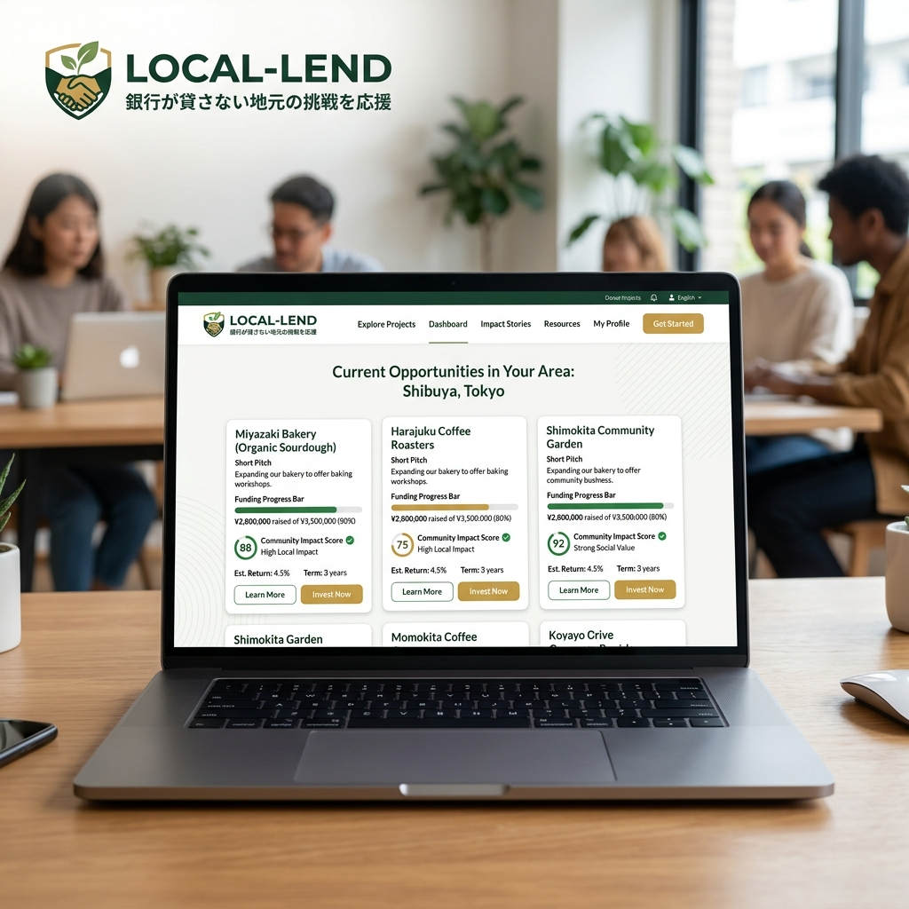

銀行が貸さない
「地元の挑戦」を応援する。
シャッター商店街を、再び活気あふれる街へ。地域住民が地元のスモールビジネスに直接投資し、金利の代わりに「リターン」と「繋がり」を得るローカル・クラウドファンディング。

信用金庫でも拾い切れない「小さな情熱」
「カフェを開きたい」「新しい焙煎機が欲しい」。そんな数百万〜数千万円の資金需要に対し、実績のない個人事業主は銀行の融資審査を通るのが困難です。LOCAL-LENDは、事業計画書よりも「地域での信頼」と「情熱」を担保に資金を集める仕組みです。
「お金」以上の価値を生むエコシステム
地域還元型のリターン
利息を現金で受け取るだけでなく、「毎日コーヒー1杯無料」「プレオープン招待」など、店舗での体験として受け取ることが可能。
支援者が「最強の顧客」に
出資した店舗には愛着が湧くもの。投資家たちは自発的にSNSで宣伝し、オープン初日から強力な常連客（アンバサダー）となります。
透明性の高いブロックチェーン管理
資金の使途や店舗の売上推移はプラットフォーム上で透明に共有され、不正を防ぎながら進捗を見守ることができます。
地域インパクトを可視化する「ソーシャルスコア」
あなたの投資が地域にどれだけの雇用を生み、どれほどの経済波及効果をもたらしたのか。LOCAL-LENDは単なる利回りではなく、社会的インパクトを「ソーシャルスコア」として可視化し、投資家のポートフォリオを彩ります。
街のシャッターを開ける、独自の審査AI
既存の金融機関が使う与信モデルは使いません。対象店舗のSNSエンゲージメント、地域住民の推薦コメント数、周辺エリアの人口動態などをAIが複合的に分析し、独自の「ローカル信用格付け」を算出。デフォルトリスクを最小化します。
Case Study | 廃校を活用したゲストハウス
過疎化が進む村の廃校をゲストハウスに改装するプロジェクト。銀行からは見放されましたが、LOCAL-LENDを通じて地域の卒業生や関係人口から3,000万円を調達。現在では村の新たなハブとして、週末には他県からも人が訪れる場所に。
地方創生から「地方自走」へ
補助金に頼る地方創生は長続きしません。地域の中にあるお金が地域の中で循環し、挑戦する人を地元が支える。LOCAL-LENDは、自走するローカル経済圏のインフラとなります。